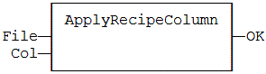
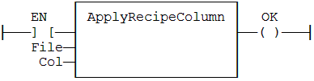

Function
Apply the values of a column from a recipe file.
|
Name |
Type |
Description |
|
FILE |
STRING |
Pathname of the recipe file (.RCP or .CSV) - must be a constant value! |
|
COL |
DINT |
Index of the column in the recipe (0 based). |
|
Name |
Type |
Description |
|
OK |
BOOL |
TRUE if OK - FALSE if parameters are invalid. |
The 'FILE' input is a constant string expression specifying the path name of a valid .RCP or .CSV file. If no path is specified, the file is assumed to be located in the project folder. RCP files are created using the recipe editor. CSV files can be created using EXCEL or NOTEPAD.
In CSV files, the first line must contain column headers, and is ignored during compiling. There is one variable per line. The first column contains the symbol of the variable. Other columns are values.
If a cell is empty, it is assumed to be the same value as the previous (left side) cell. If it is the first cell of a raw, it is assumed to be null (0 or FALSE or empty string).
In LD language, the operation is executed only if the input rung (EN) is TRUE. The output rung is the result of the function.
Recipe files are read at compiling time and are embedded into the downloaded application code. This implies that a modification performed in the recipe file after downloading will not be taken into account by the application.
OK := ApplyRecipeColumn ('MyFile.rcp', COL);

The function is executed only if EN is TRUE.

Op1:
LD
'MyFile.rcp'
ApplyRecipeColumn COL
ST
OK